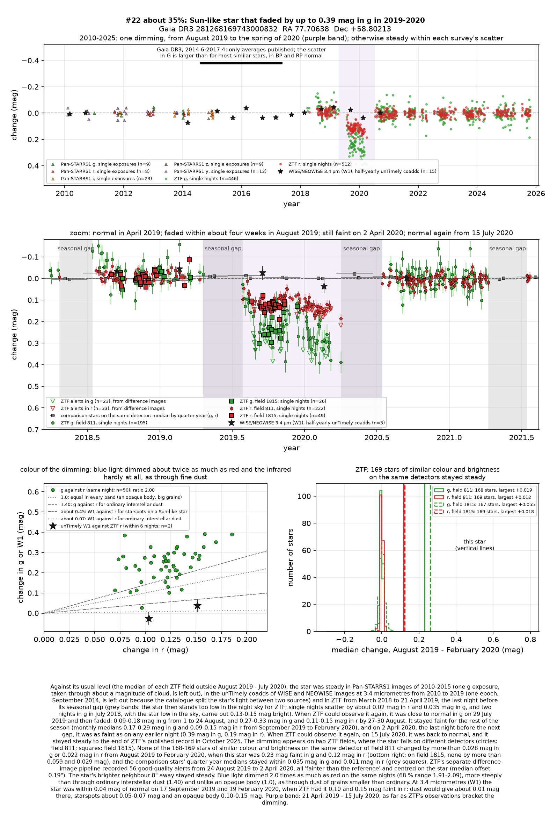
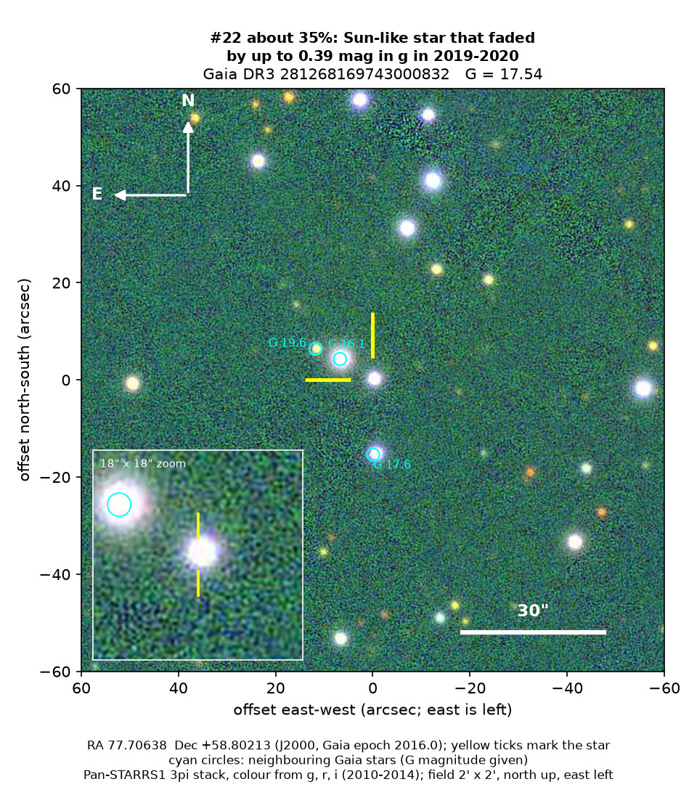
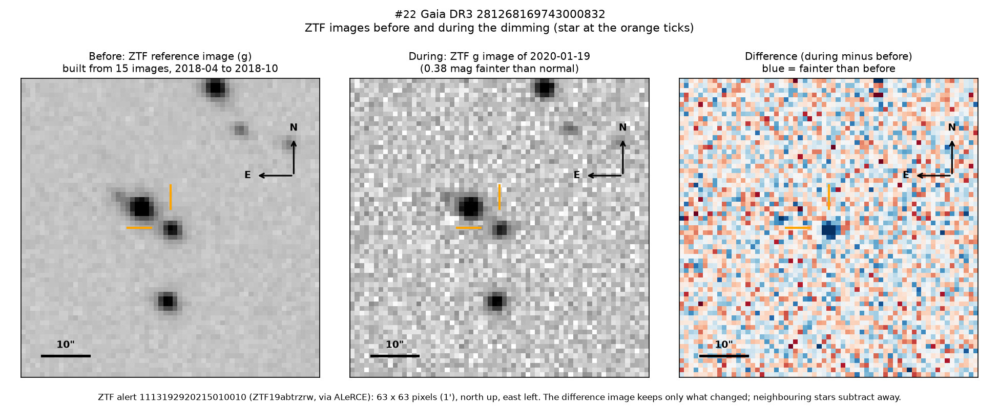

Professor of Mathematics
Paata Ivanisvili
Department of Mathematics, University of California, Irvine

Candidate 22: a Sun-like star that faded in 2019 and stayed faint into 2020
Why this estimate. The dimming is almost certainly real: ZTF, a survey telescope at Palomar Observatory in California, recorded it on two detectors, while the similar stars on the same detectors stayed steady, and its start was observed. The estimate is not higher because only ZTF recorded it; it ended while ZTF could not observe the star, after a last night on which it was as faint as at any time; its steep colour needs unusually fine dust; measurements by Gaia, the European Space Agency’s star-mapping satellite, scatter more than for most similar stars; and there is no spectrum.
How to read the pictures. The finder chart shows a patch of sky two arcminutes across, about a fifteenth of the Moon’s width, with north up and east to the left. The star sits between the two yellow ticks, and the white bar is 30 arcseconds long. On a light curve the vertical axis is magnitude, a brightness scale on which larger numbers mean fainter stars, and it is drawn so that down means fainter. Purple shading marks the dimming, and grey shading the months when the star could not be observed. Each survey uses slightly different filters, so each is compared with its own normal level. The ZTF pictures show ZTF’s reference image of the star, an image taken during the dimming, and the difference between the two, in which only what changed remains: blue means fainter and red brighter.

What changed. This ordinary Sun-like star, a little cooler and smaller than the Sun, lies about 1,740 parsecs (5,700 light-years) away in Camelopardalis, behind a moderate layer of the Milky Way’s dust. ZTF saw it steady from 2018 to April 2019 and still close to normal at the end of July 2019, after its yearly gap. Within about four weeks in August it then lost a quarter of its green light and about a tenth of its red light. It stayed faint through the autumn and winter, and on 2 April 2020, the last night before the next gap, it was as faint as at any time, down by 30 per cent in green light and 16 per cent in red. When ZTF could observe it again, on 15 July 2020, it was back to normal, and it has stayed steady since, to October 2025. ZTF’s alert system flagged the star as fainter 56 times from August 2019 to April 2020, always centred on it, while its brighter neighbour 8 arcseconds away stayed steady.
Why it might matter. Fine dust passing in front of the star is the likeliest cause. Green light dimmed about twice as much as red: far more than starspots on a Sun-like star would give, and more steeply than through ordinary interstellar dust, a ratio that needs grains much smaller than average. Two infrared visits of WISE and NEOWISE during the dimming found almost no change, which rules out an opaque body. An eclipse by another star lasts hours or days, not eight months. The star shows no sign of youth: it has no warm dust around it and lies about 340 parsecs above the Milky Way’s mid-plane, well above the layer where most young stars are found. Grains this fine are blown out of a planetary system within about an orbit, so dust orbiting the star would have to be fresh, perhaps from a recent collision. A spectrum would settle the star’s type and age.
No record of the dimming could be found. SIMBAD has no entry for the star, VSX, the variable-star index, has nothing within 30 arcseconds, and Gaia lists no variability. It is in no variable-star, young-star or cluster catalogue checked, nor among the dimming stars of Tzanidakis et al. (2025), and no transient report, Gaia alert or paper names it. ALeRCE, which holds ZTF’s alerts, has only machine-generated labels for it, such as “active galaxy”, which the star’s parallax rules out.
- Star
- Gaia DR3 281268169743000832, a Sun-like star, a little cooler and smaller than the Sun
- Location
- RA 77.70638°, Dec +58.80213° (J2000), in Camelopardalis, 11.2 degrees north of the Milky Way’s mid-plane
- Distance
- about 1,740 parsecs (5,700 light-years), within a range of 1,560 to 1,980 parsecs
- Brightness
- Gaia G = 17.54, far too faint for the eye or a small telescope
- Probability
- This candidate is unconfirmed. The percentage under the title is an estimate of the chance that it is a real, previously unrecorded case of the kind described. The estimate has not been checked by outside experts. See the introduction to all fifty-eight candidates.
- Caveat
- There is no spectrum, and Gaia’s model, a cooler orange star, conflicts with the distance from its parallax. Only ZTF recorded the dimming, although Gaia’s next data release should show its first five months. Its end fell in the yearly gap, so how deep it became and how it recovered are unknown. A Sun-like star 39 degrees away, candidate 23, dimmed over nearly the same months, but on different ZTF fields and detectors, and no single cloud could cover both, so the timing is most likely a coincidence.

